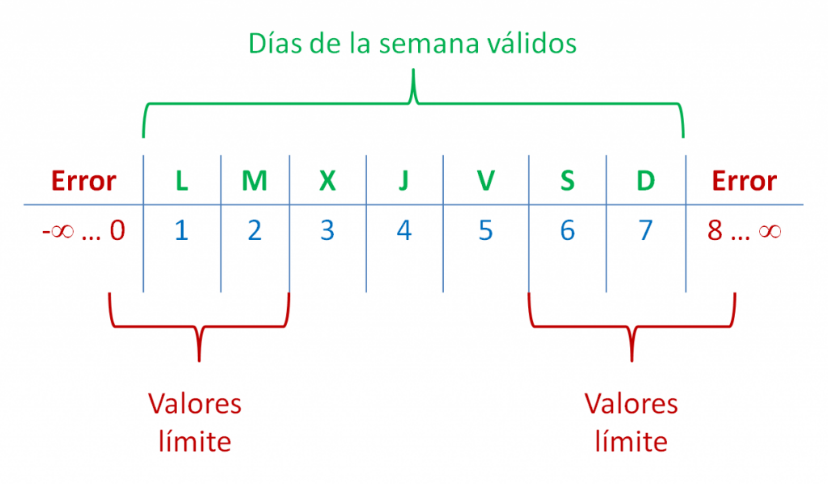
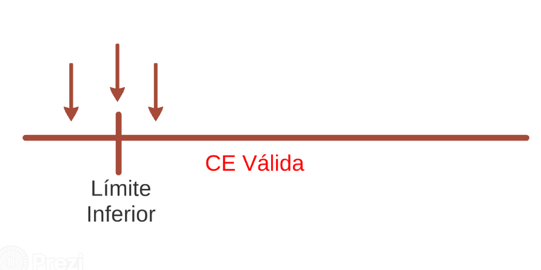
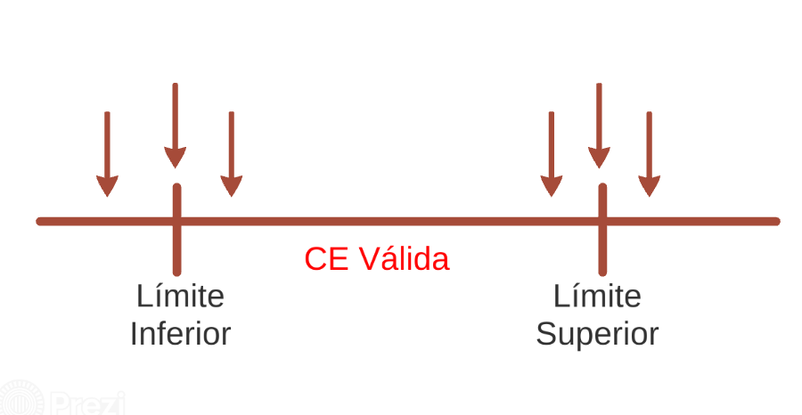

El análisis de valores limite es la técnica de diseño de pruebas de caja negra en la cual los casos de prueba son diseñados basándose en los valores límite
La técnica de análisis de los valores límite se basa en el hecho heurístico de que los errores tienden a producirse con más probabilidad en los valores extremos de los posibles valores de entrada.
Esta técnica, que puede considerarse una expansión de la idea de partición de equivalencia, se puede usar siempre que la entrada a analizar tenga definidos esos límites en la especificación de los requerimientos. En realidad no es que se pueda, sino que se debe usar en tales casos.
Los valores elegidos para los casos de prueba son justo aquellos que están por encima o por debajo de los márgenes de las clases de equivalencia.
Los valores límite no solo se exploran en los datos de entrada, sino que también pueden estudiar las condiciones de salida.
Si una condición para un dato de entrada i especifica un rango de valores definido como n <= i <= m, los casos de prueba resultantes de aplicar el análisis de valores límite corresponden a n-1, n, n+1, m-1, m y m+1.
Por ejemplo, si el dato de entrada corresponde a un número que nos indica el día de la semana en el que estamos, deberíamos definir el rango de valores válidos como: 1 <= día <= 7. En ese caso, los casos de prueba resultantes a aplicar serían 0, 1, 2, 6, 7 y 8.
Cuando una entrada indica que se deben introducir varios valores, se deben diseñar casos de prueba considerando el número de valores como un rango de valores de forma que apliquemos a ese rango los valores límite para que el usuario tenga que introducir n-1, n, n+1, m-1, m y m+1 valores.
Como he dicho antes, si te es posible también debes aplicar este tipo de pruebas a los datos de salida. Imagina que en el ejemplo último, la nota media que va a obtenerse como salida debe estar entre 0 y 10, deberías usar el análisis de valores límite con el fin de crear casos de prueba que generen los siguientes valores de notas medias: -1, 0, 1, 9, 10 y 11.
Valor límite inferior, valor menor al límite inferior, valor mayor al limite inferior
Valor límite superior, valor menor al límite superior, valor mayor al límite superior
